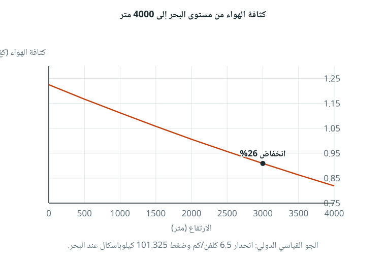

لماذا تخسر المروحة قوتها مع الارتفاع؟
Why air density falls with altitude
كل متر مكعب من الهواء يحمل كتلة أقل عند الارتفاع. من مستوى البحر إلى 3000 متر تنخفض الكثافة 26%، وتنخفض معها قدرة أي آلة تدفع كتلة هواء: مراوح، محركات، أبراج تبريد.
الضغط يقلّ مع الارتفاع لأن ما فوق النقطة أقلّ وزنًا، والحرارة تقلّ أيضًا في طبقة الجو السفلى. الكثافة تتبع نسبة الضغط إلى الحرارة: الأول يقلّ أسرع من الثاني، فتقلّ الكثافة. المروحة التي تُحرّك حجمًا ثابتًا تُحرّك كتلة أقل، وقدرتها على نقل الطاقة تتناسب مع الكثافة.
الآلية
كيف يحدث الأمر على مستوى الجسيمات أو المتغيّرات المباشرة
الغلاف الجوي في أوله يبرد بمعدل نحو 6.5 كلفن لكل كيلومتر، والضغط يتبع قانون القاعدة الأسّية. الكثافة = الضغط ÷ (ثابت الغاز × الحرارة المطلقة). عند متر واحد من الارتفاع تتغيّر الكثافة بنحو 0.01%، والتراكم هو ما يُشعر به في المرتفعات لا الخطوة الواحدة.
الأرقام والوحدات
العلاقات والوحدات والنطاقات العددية التي تسند الشرح
بمعادلة الجو القياسي: الكثافة 1.225 كغ/م³ عند مستوى البحر، و1.112 عند 1000 متر، و1.007 عند 2000، و0.909 عند 3000، و0.819 عند 4000. الانخفاض 25.6% عند 3000 متر، ويقترب من 33% عند 4000 متر. مروحة مصمّمة لـ100 كيلوواط تفقد الربع تقريبًا من قدرتها على نفس السرعة في الرياض المرتفعة قليلًا مقابل مدينة ساحلية.
الفرق الدقيق
المفهوم الملتبس الذي يُخلَط به، وأين ينفصلان
الكثافة ليست الضغط: الضغط يقيس عمود الهواء فوقك، والكثافة تقيس كتلته في حجم معلوم. يوم حارّ عند مستوى البحر يعطي كثافة أقلّ من يوم بارد عند 1000 متر؛ ولهذا تُحسب أداءات المعدّات بـ«الارتفاع المكافئ» لا بالارتفاع الجغرافي وحده.
حدود التعريف
أين ينكسر التعريف أو النموذج وما الذي لا يفسّره
المعادلة المستخدمة هي الجو القياسي الدولي (رطوبة صفرية، انحدار حراري 6.5 كلفن/كم)، وهي تمثّل متوسطًا لا يومًا بعينه. الرطوبة تخفض الكثافة قليلًا لأن بخار الماء أخفّ من الهواء، والفارق يصل إلى 1–2% في الجوّ الرطب.

| الكمية | القيمة | المصدر |
|---|---|---|
| كثافة الهواء عند مستوى البحر | 1.225 kg/m³ | [1] |
| الكثافة عند 3000 متر | 0.909 kg/m³ | [2] |
| نسبة الانخفاض عند 3000 متر | 25.8 % | [2] |
| ثابت الغاز للهواء الجاف | 287.05 J/(kg·K) | [3] |
المصادر
- 1 NASA Glenn — Air Properties Definitions — NASA. www1.grc.nasa.gov/beginners-guide-to-aeronautics/air-properties-definitions/ · اطُّلع عليه 2026-11-16
- 2 NASA Glenn — Equation of State (Ideal Gas) — NASA. www1.grc.nasa.gov/beginners-guide-to-aeronautics/equation-of-state-ideal-gas-2/ · اطُّلع عليه 2026-11-16
- 3 OpenStax, College Physics 2e — The Ideal Gas Law — OpenStax. openstax.org/books/college-physics-2e/pages/13-3-the-ideal-gas-law · اطُّلع عليه 2026-11-16
راجعه: مراجعة آلية — ديوان المعرفة (أرقام محسوبة + مصادر متحققة) 2026-11-16 · 2026-11-16 · آخر تحديث 2026-11-16